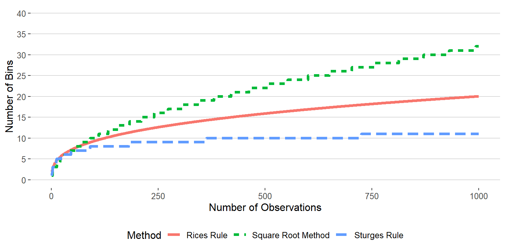

Recall that descriptive statistics is a preliminary step to statistical inference and is concerned with summarizing and characterizing a set of data from a sample or population . Creating a frequency table can be a useful first step for describing the variables in a set of data. However, there are many other ways to describe or visualize data. This week we will introduce some different ways to visualize and describe a set of data and what we can learn from these descriptions.
Recall that a frequency table shows the distribution of a variable organized as a table. The first column represents the possible values of the variable and the remaining columns describe how often each value occurs using frequency, relative frequency, cumulative relative frequency (if applicable) or potentially all three.
We can create a frequency table for any type of variable. However, when dealing with quantitative continuous variables we cannot list all possible values because the number of possible values is infinite. Therefore, we usually have to make a decision about how we want to group values of the variable, a process called binning. Binning is a way to group numbers of more-or-less continuous values into a smaller number of “bins”. These bins represent a collection of values that fall into a certain range and make listing the possible values a lot easier.
Consider the following trivial example using the quantitative continuous variable \[X = \{1.23, \ 1.38, \ 1.76, \ 2.60, \ 2.60, \ 2.79, \ 2.89, \ 3.12, \ 3.15, \ 3.18, \ 3.65, \ 3.77, \ 3.87, \ 4.12, \ 4.41\}\]
Each observation of the variable \(X\) is measured with a precision of two decimal places, and no two observations in the sample are identical. As a result if we simply listed the possible values we would have \(15\) unique values each with a frequency of \(1\) which would produce a frequency table that wasn’t very informative. We can, instead, use binning to extract more meaningful information about the distribution of \(X\). Now consider the frequency table using binning:
| Bin | Frequency | Relative Frequency | Cumulative Relative Frequency |
|---|---|---|---|
| \(1 < X \leq 1.5\) | 2 | 0.13 | 0.13 |
| \(1.5 < X \leq 2\) | 1 | 0.07 | 0.20 |
| \(2 < X \leq 2.5\) | 0 | 0.00 | 0.20 |
| \(2.5 < X \leq 3\) | 4 | 0.27 | 0.47 |
| \(3 < X \leq 3.5\) | 3 | 0.20 | 0.67 |
| \(3.5 < X \leq 4\) | 3 | 0.20 | 0.87 |
| \(4 < X \leq 4.5\) | 2 | 0.13 | 1.00 |
The following is another example using \(n = 272\) observations collected on the waiting time between eruptions and the duration of the eruption of the Old Faithful geyser in Yellowstone National Park, Wyoming, USA.
| Duration (min) | Waiting Time (min) |
|---|---|
| 3.6 | 79 |
| 1.8 | 54 |
| 3.333 | 74 |
| 2.283 | 62 |
| 4.533 | 85 |
| 2.883 | 55 |
| 4.7 | 88 |
| 3.6 | 85 |
| \(\vdots\) | \(\vdots\) |
Consider a frequency table to describe the distribution of the variable waiting time (min)
| Waiting Time | Frequency | Relative Frequency | Cumulative Relative Frequency |
|---|---|---|---|
| \(40 < X \leq 45\) | 4 | 0.015 | 0.015 |
| \(45 < X \leq 50\) | 22 | 0.081 | 0.096 |
| \(50 < X \leq 55\) | 33 | 0.121 | 0.217 |
| \(55 < X \leq 60\) | 24 | 0.088 | 0.305 |
| \(60 < X \leq 65\) | 14 | 0.051 | 0.357 |
| \(65 < X \leq 70\) | 10 | 0.037 | 0.393 |
| \(70 < X \leq 75\) | 27 | 0.099 | 0.493 |
| \(75 < X \leq 80\) | 54 | 0.199 | 0.691 |
| \(80 < X \leq 85\) | 55 | 0.202 | 0.893 |
| \(85 < X \leq 90\) | 23 | 0.085 | 0.978 |
| \(90 < X \leq 95\) | 5 | 0.018 | 0.996 |
| \(95 < X \leq 100\) | 1 | 0.004 | 1.000 |
IMPORTANT: one thing to consider is that grouping continuous data into discrete intervals leads to a loss of precision. Sometimes this can result in the loss of valuable information present in the original data. In addition, how we choose to bin the data (i.e how wide we make the intervals) may lead to different, sometimes erroneous, conclusions about the distribution and patterns within the data.
Consider the frequency table for the waiting time (min) with only two bins
| Waiting Time | Frequency | Relative Frequency | Cumulative Relative Frequency |
|---|---|---|---|
| \(40 < X \leq 70\) | 107 | 0.393 | 0.393 |
| \(70 < X \leq 100\) | 165 | 0.607 | 1.000 |
Descriptive statistics or graphical summaries can tell us a lot about the variables in our data. Graphs help us visualize trends in the data, identify problematic observations, and can help inform the types of analyses we should use. We may be interested in certain features related to the distribution(s) of the variable(s) in our data, such as the shape, center, and variability .
shape refers to how observations cluster across the range of a variable. Certain aspects to note would be where observations are densely packed (values with high frequencies) and where are observations sparser (values with low frequencies). This can give us a feel for where a typical value would appear and what values may be considered “rare” or “extreme”.
Center refers to the ``middle point” on the distribution and also supplies information about where does a typical value falls.
Variability refers to how tightly observations cluster around the center of a distribution. When values are tightly packed they are said to have low variability vs when they are spread out they are said to have high variability
modal category is a feature of qualitative data only and refers to the most frequent category of a qualitative variable.
There are several graphs that can be used to display qualitative data. The most common are bar graphs and pie charts.
A Bar graph is simple and widely used plot for displaying the distribution of categorical variables. Each category is represented by a bar, and the height of the bar corresponds to the frequency or proportion of observations in that category. When the bars are sorted in decreasing frequency it is called a Pareto chart.
A Pie chart is useful for illustrating the proportional contribution of each category to the whole. Beyond this, it is not a particularly useful plot when describing the features of a distribution.
Ex. Recall the example from Week 1 regarding the Pew Research survey asking teens to rate how distracted they are by their cell phones. The following are a bar graph and pie chart of student responses
There are also many plots that can be used with quantitative data. Some of the most commonly used graphs are listed below.
Example: A dot plot constructed for the \(n = 272\) observations collected on the waiting time between eruptions and the duration of the eruption of the Old Faithful geyser in Yellowstone National Park, Wyoming, USA.
Example: A stem and leaf plot constructed for the \(n = 272\) observations collected on the waiting time between eruptions and the duration of the eruption of the Old Faithful geyser in Yellowstone National Park, Wyoming, USA.
##
## The decimal point is 1 digit(s) to the right of the |
##
## 4 | 3
## 4 | 55566666777788899999
## 5 | 00000111111222223333333444444444
## 5 | 555555666677788889999999
## 6 | 00000022223334444
## 6 | 555667899
## 7 | 00001111123333333444444
## 7 | 555555556666666667777777777778888888888888889999999999
## 8 | 000000001111111111111222222222222333333333333334444444444
## 8 | 55555566666677888888999
## 9 | 00000012334
## 9 | 6Both dot plots and stem and leaf plots are excellent choices for discrete variables with a small to moderate number of observations. However, when a variable consists of many observations, has low variability, or is continuous, it can be difficult to constructs these two plots.
The The following are alternatives that work for variables of any number of observations.
A Histogram is a specialized type of bar graph. It uses bars to portray the frequencies or relative frequencies of the possible outcomes for a quantitative variable of either type. The histogram uses binning to condense the view of a quantitative variable into a smaller set of intervals which makes it particularly useful when the number of observations is large. The width of the bins is arbitrary but all bins should be the same length and cover all possible values of the data. The steps for constructing a histogram are:
In general, you can choose the the number of bins \(k\) you wish to use and set the bin width \(w\) accordingly or alternatively set the bin width you want and use the corresponding number of bins.
\[ k = \frac{\max \ x - \min x}{w}\]
\[ w = \frac{\max x - \min x}{k}\]
where \(\min\) and \(\max\) denote the smallest and larges values of the variable \(x\), respectively.
How many bins should I use? This is actually a question that has received a lot of attention in the scientific literature. Typically, you want to be sure that you don’t use “too few” bins as this can causing misleading conclusions about the features of the distribution. There are several rules that are based on the coverage and number of observations of the variable:
square root method is defined as \(k = \text{round}(\sqrt{n})\). This is a fairly easy and safe rule for choosing the number of bins to use. However, for large sample sizes it can lead to a very large number of bins.
Sturges Rule is defined as \(k = \text{round}(\log_2 n)+1\). This method is not great for a small number of observations (i.e \(n < 30\))
Rices Rule is defined as \(k = 2\sqrt[3]{n}\). This rule is a nice intermediate between Sturges Rule and the square root method.

Consider the following example of histograms constructed for the \(n = 272\) observations collected on the waiting time between eruptions and the duration of the eruption of the Old Faithful geyser in Yellowstone National Park, Wyoming, USA.
Try it out: Construct a histogram for the following 10 observations of the variable \(X\) \[X = \{ -1.49,-0.65,-0.6,-0.54,-0.45,0.01,0.17,0.27,0.51,1.34 \}\] using \(k = 4\) bins/intervals
\[ w = \frac{1.34 - (-1.49)}{4} \approx \frac{3}{4} \ \text{or} \ 0.75 \]
| X | Frequency | Relative Frequency | Cumulative Relative Frequency |
|---|---|---|---|
| \(-1.5 < X \leq -0.75\) | 1 | 0.1 | 0.1 |
| \(-0.75 < X \leq 0\) | 4 | 0.4 | 0.5 |
| \(0 < X \leq 0.75\) | 4 | 0.4 | 0.9 |
| \(0.75 < X \leq 1.5\) | 1 | 0.1 | 1.0 |
If you’d like to read more about scaling interval widths you can check out these references: